Heroes of Might and Magic III - Tower
i'l add some text later on
-
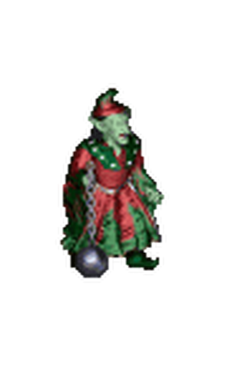 Gremlin
Gremlins are indentured to menial labor around a Tower. While they are not great warriors by any standard, they are numerous and willing. Gremlins attack with their attached balls and chains.
-
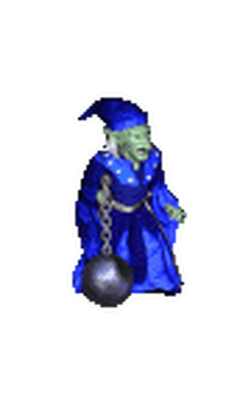 Master Gremlin
Master gremlins - those who have proven their loyalty - are cut from their balls and chains and able to hurl them in a ranged attack
-
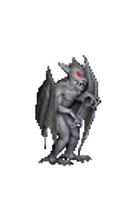 Stone Gargoyle
Stone Gargoyles and Obsidian Gargoyles are the second level creatures of Tower. They are recruited from the Parapet.
-
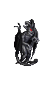 Obsidian Gargoyle
Stone and Obsidian Gargoyles are demon-form statues animated for use as troops. They attack with raking claws.
-
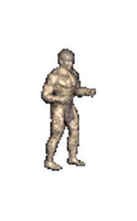 Stone Golem
Stone Golems and Iron Golems are the level 3 creatures of Tower. They are recruited from the Golem Factory.
-
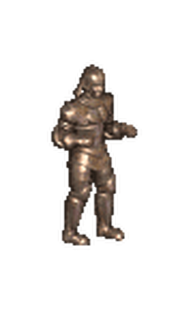 Iron Golem
Stone and iron golems are built and animated through a process involving both precise craftsmanship and complex magic. Though slow, they are strong and durable combatants. Stone golems take half damage from spell attacks, while iron golems take only a quarter of such damage.
-
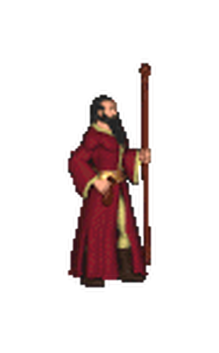 Mage
Apprentice Magi, under the mentorship of Wizards, serve as Tower troops before they become full masters of their craft.Although the documentation says that only Arch Magi ignore the obstacle penalty, this is also true for Magi.
-
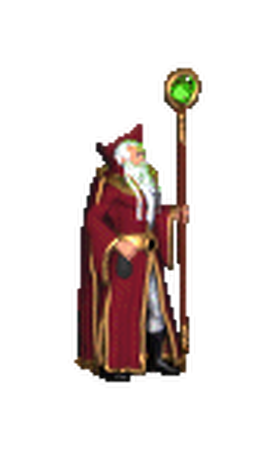 Arch Mage
Both Mage and Arch Mage units suffer no damage penalty for attacking adjacent enemies and reduce the casting cost of allied hero spells by two. Arch Mage attacks penetrate cover and deal full damage to enemies behind siege walls.
-
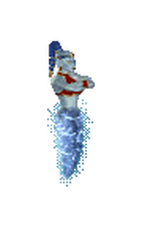 Genie
Genies and master genies are Tower allies recruited from the realm of air magic. They attack with a shocking grasp that does solid damage to all opponents and 150% damage to efreet.
-
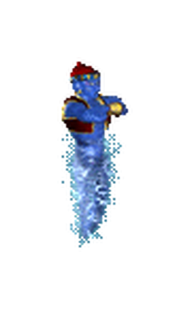 Master Genie
Once per turn, master genies can cast a random, beneficial spell on an allied troop. All spells are considered to be cast at the advanced level of the corresponding school with a spell power of 6.
-
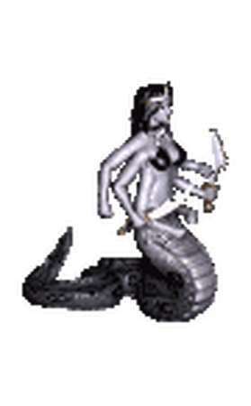 Naga
Nagas and Naga Queens are the level 6 creatures of Tower. They are recruited from the Golden Pavilion.
-
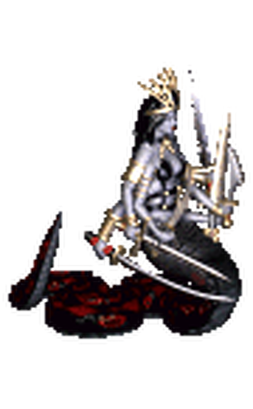 Naga Queen
Nagas are guardian defenders of great strength. Their multi-sword attacks always do maximum damage and are so overwhelming they are impossible to counterstrike against.
-
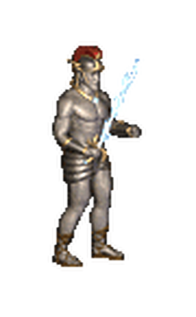 Giant\
Giants and Titans are the level 7 creatures of Tower. They are recruited from the Cloud Temple. Giants and titans are immune to spells affecting the mind.
-
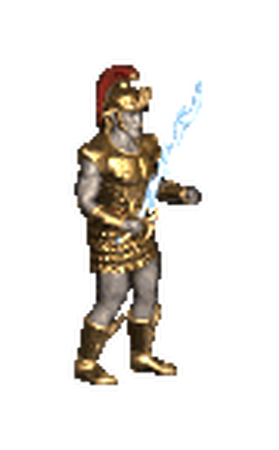 Titan
Titans do 150% damage to black dragons, can hurl lightning bolts in a ranged attack and suffer no penalty for hand-to-hand attacks, making them the most powerful ranged attack unit in the game.
- Piquedram the Alchemist Increases the speed of any Stone or Obsidian Gargoyles by 1 and their Attack and Defense skills by 5% for every 2 levels (rounded up). Piquedram spent much of his schooling in Alchemy dealing with various types of non-valuable rock. It is no surprise, then, that in the service of Bracada he was able to improve upon the basic design of the Gargoyle.
- Thane the Alchemist Increases the speed of any Genies or Master Genies by 1 and their Attack and Defense skills by 5% for every 5 levels (rounded up). Thane is a male genie, but his background is not well known. He has been teaching Alchemy in Bracada for so long that not even the elders remember a time without him.
- Josephine the Alchemist Increases the speed of any Stone or Iron Golems by 1 and their Attack and Defense skills by 5% for every 3 levels (rounded up). Josephine was the first to successfully animate a stone golem, creating a process that was much more sophisticated than that used for the gargoyle, on which her research was based.
- Neela the Alchemist Receives a 5% per level bonus to armorer skill percentage. Neela is one of the strongest of her kind, being able to resist an incredible amount of punishment. She somehow is able to instill this resistance in the troops she commands.
- Torosar the Alchemist Increases the Attack and Defense skills of any Ballista by 5% for every 5 levels (rounded up). Torosar is formally trained as an Alchemist, though he has always had an interest in battlefield and siege tactics, often studying texts on the subject of war more frequently than on the subject of alchemy.
- Fafner the Alchemist Increases the speed of any Nagas or Naga Queens by 1 and their Attack and Defense skills by 5% for every 6 levels (rounded up). It is said that Fafner became a genie over a millenium ago, when upon finding a genie bottle, wished that he become as powerful as the genie granting the wish. The wish was granted, and Fafner has served the leaders of Bracada ever since.
- 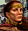 Rissa the Alchemist Increases kingdom's mercury production by +1 Mercury per day. Rissa was the first Alchemist to perfect the art of converting useless soft metals into mercury. Though now commanding her own army, she spends much of her idle time experimenting with other materials.
- Iona the Alchemist Increases the speed of any Genies or Master Genies by 1 and their Attack and Defense skills by 5% for every 5 levels (rounded up). Iona proved long ago that she was more powerful than most of her kind, but her charming personality prevents those who serve her from being intimidated by her strength.
- Astral the Wizard Casts Hypnotize with increased effect, based on hero level compared to the level of the target unit. Astral arrived in Erathia nearly ten years ago, and was quickly accepted into the Wizards' Guild in Bracada. His rise to power within the Guild ranks made some people joke that only magic could have brought him so much success so soon.
- 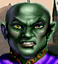 Halon the Wizard Receives a 5% per level bonus to Mysticism skill. Halon was a well respected hero in Enroth, but became so bored after the Succession Wars that he left to explore the world. He recently accepted a command rank in Bracada's military, hoping that it would give him something new to do.
- Serena the Wizard Receives a 5% per level bonus to Eagle Eye skill percentage. The first time Serena cast a spell she nearly killed herself. She channeled so much magical energy into the spell that a Wizard in a neighboring town felt it. He quickly sought her out, bringing her to the Wizards' Guild so that she could learn to control her powers.
- 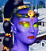 Daremyth the Wizard Casts Fortune which always adds +3 to Luck. Daremyth should have been dead a long time ago. Her go-anywhere-do-anything attitude has put her in situations that she should have never survived, but somehow she comes through unscathed.
- Theodorus the Wizard Increases the speed of any Magi or Arch Magi by 1 and their Attack and Defense skills by 5% for every 4 levels (rounded up). Theodorus is easily one of the best spellcasters ever seen in Bracada. As a result, journeyman mages often seek to learn from him, embarking on a pilgrimage of sorts in the hopes that they can bask in his wisdom.
- Solmyr the Wizard Casts Chain Lightning with increased effect, based on hero level compared to the level of the target unit. Solmyr was trapped in a genie bottle for over a millennium, and was so grateful to the human who finally released him that he accidentally swore to serve the man for eternity. As fate would have it, that man is Gavin Magnus, the immortal ruler of the Bracada Highlands.
- 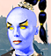 Aine the Wizard Increases kingdom's income by 350 gold per day. Aine has lived in Bracada longer than most can remember, and is said to be one of the wealthiest heroes in the land. She must have wealth hidden somewhere, for her kind-hearted nature causes her to regularly contribute large sums of money to whatever cause she chooses to pursue.
- Cyra the Wizard Casts Haste with increased effect, based on the level of the target unit. Cyra originally sought to learn magic so that she could cast spells on men to make them love her. She gave up that dream, however, when she discovered that she had real mystical talents that could be put to better use.
-
Dracon the Wizard Can upgrade Monks, Zealots, Magi and Arch Magi to Enchanters. Considered by many to be a magical genius, Dracon seeks to become history's greatest Dragon Slayer. Unlike his fellow Wizards, Dracon eschews decorative attire for more practical battle gear.